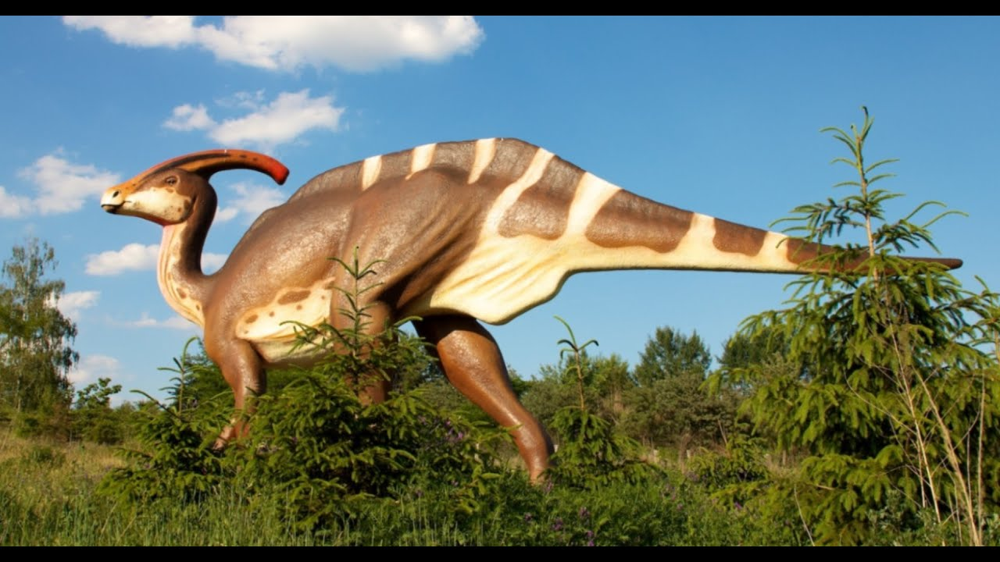

Орнитоподы
Орнитоподы, или птиценогие (лат. Ornithopoda, от др.-греч. род. п. — птица и др.-греч. — нога) — инфраотряд птицетазовых растительноядных динозавров. Ископаемые остатки известны с ранней юры до конца мела на всех континентах планеты, особенно в Северной Америке и Азии, но являются редкостью в Южном полушарии.
Ранние виды были мелкими, передвигающимися на двух конечностях, животными. Позже орнитоподы увеличились в размере и стали четвероногими, но, вероятно, сохранили способность передвигаться на двух конечностях в некоторых обстоятельствах (например, бег при спасении от хищников или любой другой опасности). К меловому периоду они стали очень успешной группой динозавров.
Многие из них имели крупные размеры, игуанодон, встав на дыбы, достигал 10 (в некоторых случаях даже 13) метров. Передние конечности у них обычно были значительно более короткими (в 1,5—2 раза) и не столь сильными, как задние. Поэтому ранее считалось, что они передвигались исключительно на задних конечностях; согласно последним исследованиям, использовали при ходьбе также и передние лапы. Зубы срастались по всей длине челюсти, а по вертикали состояли из нескольких коронок, заменявшихся новыми по мере стачивания. Игуанодоны — наиболее известные и ранее всего открытые из этой группы.
Гадрозавры и родственные им виды за своеобразную форму морды, напоминающую клюв, получили прозвание «утконосых». Сам клюв имел роговой слой. Они были меньше игуанодонов (3—4 м).
Изучение головного мозга показало наличие у этих животных хорошего обоняния. Коэффициентов энцефализации указывает на то, что орнитоподы (в частности гадрозавриды) обладали более развитыми когнитивными способностями, т.е. навыками мозга усваивать и обрабатывать информацию об окружающем мире. Это соответствует другим данным о социальном взаимодействии (например, жизни в стадах, общих гнёздах) этих динозавров, которые указывают на высокое и сложное поведение, такое как забота о своих детёнышах, половое ухаживание и общительность.
Классификация орнитоподов
- Гадрозавры
- Гадрозавры
- Завролофы
- Хенеозавры
- Игуанодонтиды
- Гипсилофодонтиды
- Гетеродонтозавровые
- Пизанозавровые
- Пситтакозавровые